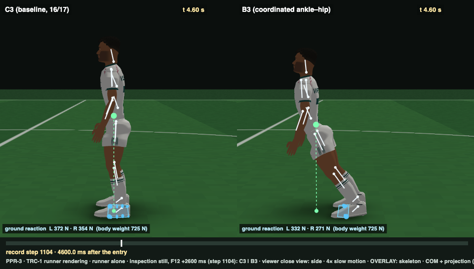
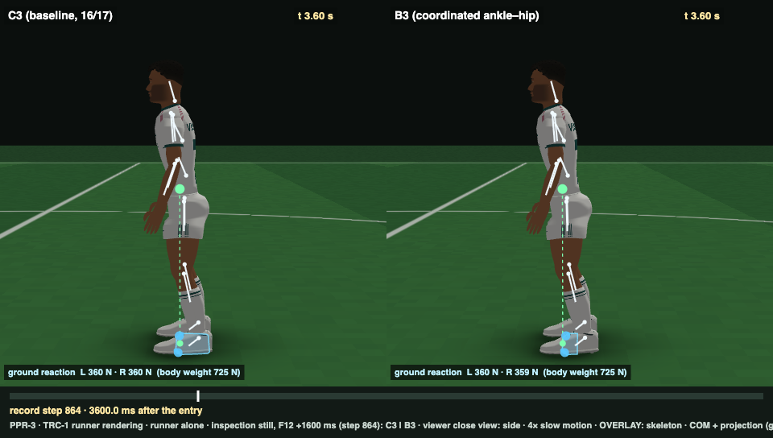
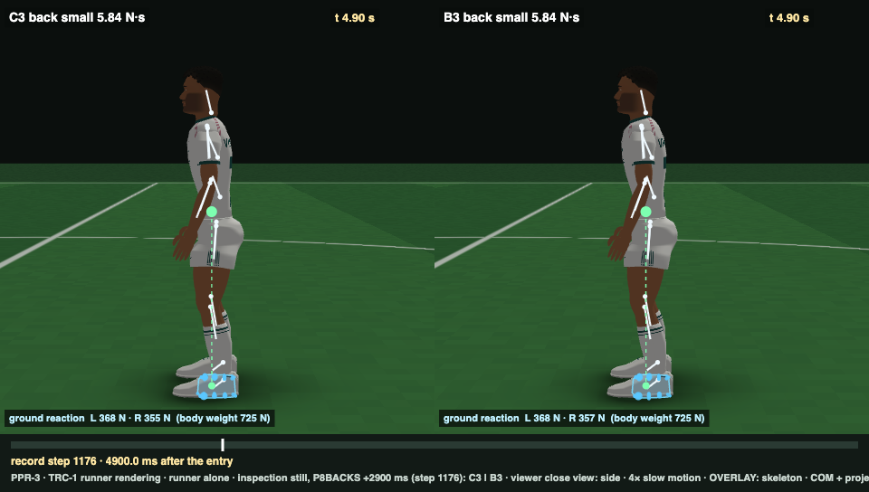
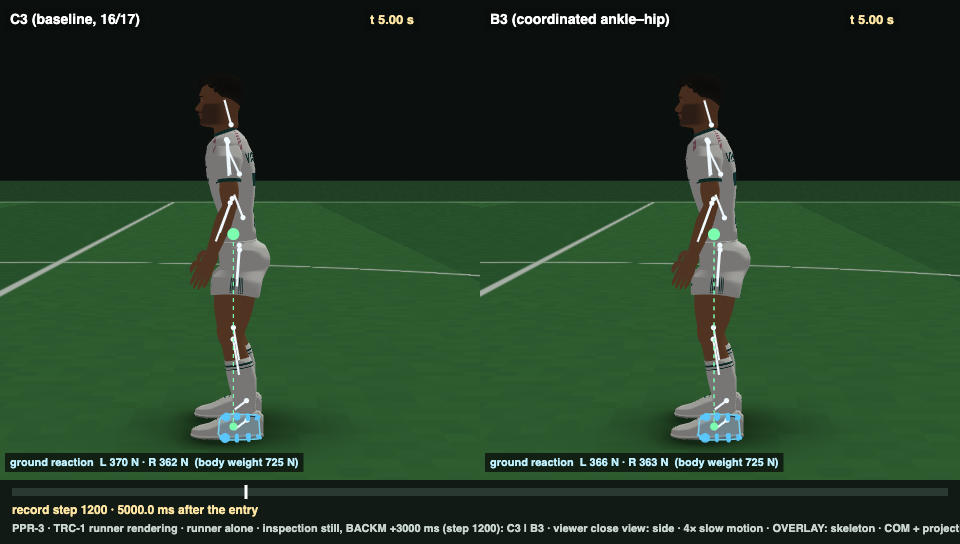

| C3 | B3 | ||
|---|---|---|---|
| U1 | ✓ | ✓ | |
| U2 | ✓ | ✓ | |
| U3 | ✓ | ✓ | |
| U4 | ✓ | ✓ | |
| U5 | ✓ | ✓ | |
| U6 | ✓ | ✓ | |
| P1 | ✓ | ✓ | |
| P2 | ✓ | ✗ | B3 fwd moderate not settled within the tail window |
| P3 | ✓ | ✓ | |
| P4 | ✓ | ✓ | |
| P5 | ✓ | ✓ | |
| P6 | ✓ | ✗ | B3's hip responds at 58–71 ms (its 30 ms rate channel): preregistration error |
| P7 | ✓ | ✓ | |
| P8 | ✗ | ✗ | back small C3 0.287 · B3 0.34 |
| M1 | ✓ | ✓ | |
| T1 | ✓ | ✓ | fwd C3 12.09 · B3 11.8 |
| DET | ✓ | ✓ |
| push | P8 overshoot | R1: max |Δx| after 3.5 s (mm) | R2: HAT pitch after 3.5 s | R3: hip–ankle corr | post-hoc B3 (75 ms rate): os · corr |
|---|---|---|---|---|---|
| back.small | 0.287 / 0.34 | 4.5 / 6.11 (tol 4.1) | 1.16° / 1.82° | -0.43 / -0.77 | 0.407 · -0.83 |
| back.moderate | 0.232 / 0.237 | 7.4 / 9.37 (tol 4.1) | 2.42° / 3.06° | -0.31 / -0.77 | 0.266 · -0.82 |
| fwd.small | 0.05 / 0.017 | 2.87 / 2.69 (tol 4.1) | 0.68° / 0.86° | -0.47 / -0.77 | 0 · -0.84 |
| fwd.moderate | 0 / 0 | 6.12 / 8.95 (tol 4.1) | 1.15° / 1.19° | -0.21 / -0.52 | 0 · -0.6 |
R1 tolerance max(4.1 mm, 0.10 × peak). R3 fails if corr < −0.5 with both RMS > 2 N·m. Causality C1–C5 PASS · L1 pass · L2 pass (fwd physical 11.78 = frozen 11.8 N·s) · muscle: peak activation 0.995 back moderate (C3 0.997; the < 0.99 row was a preregistration flaw).
| case | C3 | B3 |
|---|---|---|
| backward small (P8) | peak 16.6 mm · overshoot 0.287 · after 3.5 s 4.5 mm | peak 18.1 mm · overshoot 0.34 · after 3.5 s 6.1 mm |
| forward 12 N·s | peak 59.1 mm · overshoot 0 · after 3.5 s 8.1 mm | falls at 2.68 s |
| near-limit forward 14 N·s | falls at 1.65 s | falls at 1.63 s |
| lateral 15 N·s | peak 48.3 mm · overshoot 0.023 · after 3.5 s 8.7 mm | peak 48.2 mm · overshoot 0.036 · after 3.5 s 8.7 mm |
| quiet standing (12 s) | COM RMS AP 1.52 mm | COM RMS AP 1.15 mm |
| pulse | COM (mm) | HAT pitch (°) | pelvis (°) | thigh (°) |
|---|---|---|---|---|
| ankle | 2.588 | -0.412 | -0.004 | 0.176 |
| hip | -0.364 | 0.513 | 0.378 | -0.159 |
| lumbar | -1.588 | 1.481 | -0.412 | -0.591 |
| thoracic | -1.335 | 0.343 | -0.389 | -0.285 |
Net low-frequency stiffness, × gravity (body intrinsic beyond 0.5 s = persistent strain arm 0.15 × short-range stiffness + passive B, plus the C3 controller, minus gravity): ankles 0.58, hips 0.01 (neutral), lumbar 0.66. The ankle pulse changes the hip angle (legs +0.47°, trunk −0.41°) more than the hip pulse does (+0.54°).

12 N·s, +2.6 s: C3 stands; B3 goes over stiff at the hips (no hip flexion)

12 N·s, +1.6 s

back small, +2.9 s: mm-level differences, invisible

back moderate, +3.0 s
undisturbed standing from the PPR-3 entry, 0–6 s (each controller with its own motor noise) — normal speed · BALANCE-3 review: C3 | B3 · 361 frames
undisturbed standing from the PPR-3 entry, 0–6 s (each controller with its own motor noise) — 0.25× slow motion, steps 480–720 · BALANCE-3 review: C3 | B3 · 241 frames
small forward push 4.82 N·s (B2M small) at t = 2 s — normal speed · BALANCE-3 review: C3 | B3 · 265 frames
small forward push 4.82 N·s (B2M small) at t = 2 s — 0.25× slow motion, steps 456–696 · BALANCE-3 review: C3 | B3 · 241 frames
forward push 12.0 N·s at t = 2 s (the BALANCE-1 moderate push that failed BALANCE-1 P2) — normal speed · BALANCE-3 review: C3 | B3 · 265 frames
forward push 12.0 N·s at t = 2 s (the BALANCE-1 moderate push that failed BALANCE-1 P2) — 0.25× slow motion, steps 456–936 · BALANCE-3 review: C3 | B3 · 481 frames
matched moderate backward push 11.69 N·s (B2M) at t = 2 s — normal speed · BALANCE-3 review: C3 | B3 · 265 frames
matched moderate backward push 11.69 N·s (B2M) at t = 2 s — 0.25× slow motion, steps 456–816 · BALANCE-3 review: C3 | B3 · 361 frames
matched moderate lateral (left) push 15.0 N·s (B2M) at t = 2 s — normal speed · BALANCE-3 review: C3 | B3 · 265 frames
matched moderate lateral (left) push 15.0 N·s (B2M) at t = 2 s — 0.25× slow motion, steps 456–816 · BALANCE-3 review: C3 | B3 · 361 frames
near-limit forward push 14.0 N·s (0.94 × the matched T_fwd) at t = 2 s — normal speed · BALANCE-3 review: C3 | B3 · 265 frames
near-limit forward push 14.0 N·s (0.94 × the matched T_fwd) at t = 2 s — 0.25× slow motion, steps 456–936 · BALANCE-3 review: C3 | B3 · 481 frames
unrecoverable forward push 21.5 N·s (B2M over-limit) at t = 2 s — normal speed · BALANCE-3 review: C3 | B3 · 205 frames
unrecoverable forward push 21.5 N·s (B2M over-limit) at t = 2 s — 0.25× slow motion, steps 456–816 · BALANCE-3 review: C3 | B3 · 361 frames
P8 case, B2M back.small 5.84 N·s at t = 2 s, 0–12 s after onset, normal speed: C3 | B3 · 745 frames
Report: balance3/BALANCE3_REPORT.md · preregistration: balance3/BALANCE3_PREREGISTRATION.md · audit: balance3/BALANCE3_BODY_AUDIT.md · research: balance3/research/BALANCE3_ANKLE_HIP_LITERATURE.md